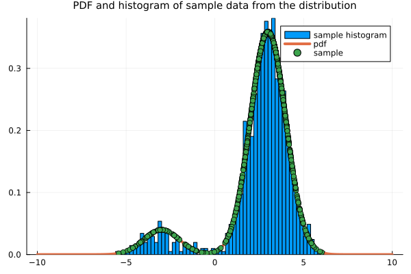
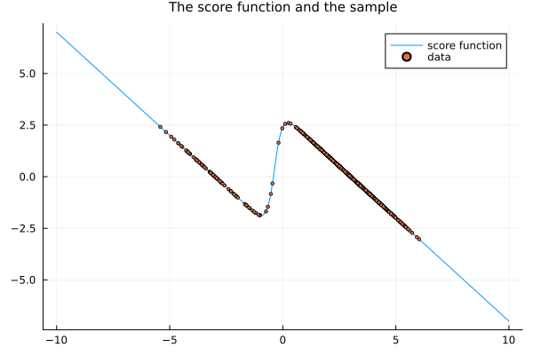
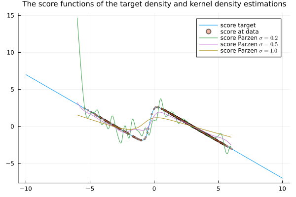
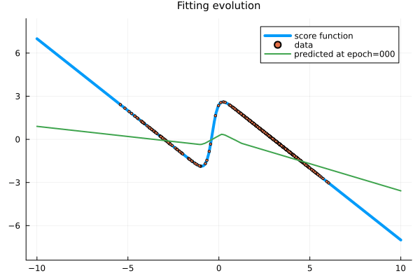
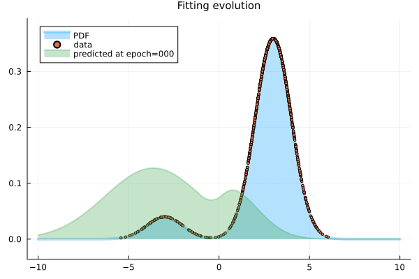

Score matching with Parzen estimation
Introduction
Aim
Explore the use of Parzen kernel estimation to approximate the explicit score matching, used as the basis for the implicit score matching objective proposed by Aapo Hyvärinen (2005) and discussed en passant by Pascal Vincent (2011) on their way to the denoising score matching objective. We illustrate the method by fiting a multi-layer perceptron to model the score function of a one-dimensional synthetic Gaussian-mixture distribution.
Motivation
The motivation is to continue building a solid background on score-matching diffusion.
Background
Aapo Hyvärinen (2005) proposed fitting directly the score of a distribution. This is obtained, in theory, by minimizing an explicit score matching objective function (i.e. the Fisher divergence). However, this function requires knowing the supposedly unknown target score function. The trick used by Aapo Hyvärinen (2005) was then to do an integration by parts and rewrite the optimization problem in terms of an implicit score matching objective function, which yields the same minima and does not require further information from the target distribution other than some sample points. The implicit score matching method requires, however, the derivative of the score function of the model, which is costly to compute in general.
Then, Pascal Vincent (2011) explored the idea of using non-parametric Parzen density estimation to directly approximate the explicit score matching objective, making a connection with denoising autoenconders, and proposing the denoising (explicit) score matching method.
We will detail denoising score matching in a separate note. Here, we stop at the Parzen density estimation idea, which was used in Pascal Vincent (2011) only as a step towards the denoising score matching. We call this method the Parzen estimated (explicit) score matching method. We also model directly the score of the distribution, as proposed in 1. Song and Ermon (2019), instead of the pdf or an energy potential of the pdf, as done earlier.
Objective function approximating the explicit score matching objective
The score-matching method from Aapo Hyvärinen (2005) aims to fit the model score function $\psi(\mathbf{x}; {\boldsymbol{\theta}})$ to the score function $\psi_X(\mathbf{x})$ of a random variable $\mathbf{X}$ by minimizing the implicit score matching objective
\[ J_{\mathrm{ISM}}({\boldsymbol{\theta}}) = \int_{\mathbb{R}^d} p_{\mathbf{X}}(\mathbf{x}) \left( \frac{1}{2}\left\|\boldsymbol{\psi}(\mathbf{x}; {\boldsymbol{\theta}})\right\|^2 + \boldsymbol{\nabla}_{\mathbf{x}} \cdot \boldsymbol{\psi}(\mathbf{x}; {\boldsymbol{\theta}}) \right)\;\mathrm{d}\mathbf{x},\]
which is equivalent to minimizing the explicit score matching objective
\[ J_{\mathrm{ESM}}({\boldsymbol{\theta}}) = \frac{1}{2}\int_{\mathbb{R}^d} p_{\mathbf{X}}(\mathbf{x}) \left\|\boldsymbol{\psi}(\mathbf{x}; {\boldsymbol{\theta}}) - \boldsymbol{\psi}_{\mathbf{X}}(\mathbf{x})\right\|^2\;\mathrm{d}\mathbf{x},\]
due to the following identity obtained via integration by parts in the expectation
\[ J_{\mathrm{ESM}}({\boldsymbol{\theta}}) = {\tilde J}_{\mathrm{ISM}}({\boldsymbol{\theta}}) + C,\]
where $C$ is constant with respect to the parameters. The advantage of ${\tilde J}_{\mathrm{ISM}}({\boldsymbol{\theta}})$ is that it does not involve the unknown score function of $X$. It does, however, involve the gradient of the modeled score function, which is expensive to compute.
In practice, this is further approximated by the empirical distribution ${\tilde p}_0(\mathbf{x})$ given by
\[ {\tilde p}_0(\mathbf{x}) = \frac{1}{N}\sum_{n=1}^N \delta(\mathbf{x} - \mathbf{x}_n),\]
so the implemented objective is the empirical implicit score matching objective
\[ {\tilde J}_{\mathrm{ISM}{\tilde p}_0}({\boldsymbol{\theta}}) = \frac{1}{N}\sum_{n=1}^N \left( \frac{1}{2}\left\|\boldsymbol{\psi}(\mathbf{x}_n; {\boldsymbol{\theta}})\right\|^2 + \boldsymbol{\nabla}_{\mathbf{x}} \cdot \boldsymbol{\psi}(\mathbf{x}_n; {\boldsymbol{\theta}}) \right).\]
Aapo Hyvärinen (2005) briefly mentions that minimizing $J_{\mathrm{ESM}}({\boldsymbol{\theta}})$ directly is "basically a non-parametric estimation problem", but dismisses it for the "simple trick of partial integration to compute the objective function very easily". As we have seen, the trick is fine for model functions for which we can compute the gradient without much trouble, but for modeling it with a neural network, for instance, it becomes computationally expensive.
A few years later, Pascal Vincent (2011) considered the idea of using a Parzel kernel density estimation
\[ {\tilde p}_\sigma(\mathbf{x}) = \frac{1}{\sigma^d}\int_{\mathbb{R}^d} K\left(\frac{\mathbf{x} - \mathbf{x}_n}{\sigma}\right) \;\mathrm{d}{\tilde p}_0(\mathbf{x}) = \frac{1}{\sigma^d N}\sum_{n=1}^N K\left(\frac{\mathbf{x} - \mathbf{x}_n}{\sigma}\right),\]
where $\sigma > 0$ is a kernel window parameter and $K(\mathbf{x})$ is a kernel density (properly normalized to have mass one). In this way, the explicit score matching objective function is approximated by the Parzen-estimated explicit score matching objective
\[ {\tilde J}_{\mathrm{P_\sigma ESM}}({\boldsymbol{\theta}}) = \frac{1}{2}\int_{\mathbb{R}^d} {\tilde p}_\sigma(\mathbf{x}) \left\|\boldsymbol{\psi}(\mathbf{x}; {\boldsymbol{\theta}}) - \boldsymbol{\nabla}_{\mathbf{x}}\log {\tilde p}_\sigma(\mathbf{x})\right\|^2\;\mathrm{d}\mathbf{x},\]
which is then further approximated with the empirical distribution, yielding the empirical Parzen-estimated explicit score matching
\[ \begin{align*} {\tilde J}_{\mathrm{P_\sigma ESM{\tilde p}_0}}({\boldsymbol{\theta}}) & = \frac{1}{2}\int_{\mathbb{R}^d} {\tilde p}_0(\mathbf{x}) \left\|\boldsymbol{\psi}(\mathbf{x}; {\boldsymbol{\theta}}) - \boldsymbol{\nabla}_{\mathbf{x}}\log {\tilde p}_\sigma(\mathbf{x})\right\|^2\;\mathrm{d}\mathbf{x} \\ & = \frac{1}{N} \sum_{n=1}^N \left\|\boldsymbol{\psi}(\mathbf{x}_n; {\boldsymbol{\theta}}) - \boldsymbol{\nabla}_{\mathbf{x}_n}\log {\tilde p}_\sigma(\mathbf{x})\right\|^2. \end{align*}\]
However, Pascal Vincent (2011) did not use this as a final objective function. Pascal further simplified the objective function ${\tilde J}_{\mathrm{P_\sigma ESM}}({\boldsymbol{\theta}})$ by expanding the gradient of the logpdf of the Parzen estimator, writing a double integral with a conditional probability, and switching the order of integration. We will do this in a follow up note, but for the moment we will stop at ${\tilde J}_{\mathrm{P_\sigma ESM}}({\boldsymbol{\theta}})$ and ${\tilde J}_{\mathrm{P_\sigma ESM{\tilde p}_0}}({\boldsymbol{\theta}})$, use a Gaussian estimator, and see how this works.
Computing the score function with the Parzen estimation amounts to
\[ \begin{align*} \boldsymbol{\nabla}_{\mathbf{x}}\log {\tilde p}_\sigma(\mathbf{x}) & = \boldsymbol{\nabla}_{\mathbf{x}}\log\left( \frac{1}{\sigma^d N}\sum_{n=1}^N K\left(\frac{\mathbf{x} - \mathbf{x}_n}{\sigma}\right)\right) \\ & = \frac{1}{{\tilde p}_\sigma(\mathbf{x})} \frac{1}{\sigma^d N}\sum_{n=1}^N \boldsymbol{\nabla}_{\mathbf{x}} \left(K\left(\frac{\mathbf{x} - \mathbf{x}_n}{\sigma}\right)\right) \\ & = \frac{1}{{\tilde p}_\sigma(\mathbf{x})} \frac{1}{\sigma^d N}\sum_{n=1}^N \frac{1}{\sigma}\left(\boldsymbol{\nabla}_{\mathbf{x}} K\right)\left(\frac{\mathbf{x} - \mathbf{x}_n}{\sigma}\right). \end{align*}\]
If we use the standard Gaussian kernel
\[ G(\mathbf{x}) = \frac{1}{\sqrt{2\pi}} e^{-\frac{1}{2} \mathbf{x}^2},\]
then
\[ \left(\boldsymbol{\nabla}_{\mathbf{x}} G\right)(\mathbf{x}) = \frac{1}{\sqrt{2\pi}}e^{-\frac{1}{2} \mathbf{x}^2} \mathbf{x} = G(\mathbf{x})\mathbf{x},\]
so that
\[ \boldsymbol{\nabla}_{\mathbf{x}}\log {\tilde p}_\sigma(\mathbf{x}) = \frac{1}{{\tilde p}_\sigma(\mathbf{x})} \frac{1}{\sigma^d N}\sum_{n=1}^N G\left(\frac{\mathbf{x} - \mathbf{x}_n}{\sigma}\right)\frac{\mathbf{x} - \mathbf{x}_n}{\sigma^2}.\]
Notice that this can be computed beforehand at the sample points, just with the knowledge of the sample points themselves. Indeed, renaming the index above from $n$ to $j$, and computing the approximate score function at each sample point $\mathbf{x}_n$ yield
\[ \boldsymbol{\nabla}_{\mathbf{x}}\log {\tilde p}_\sigma(\mathbf{x}_n) = \frac{1}{{\tilde p}_\sigma(\mathbf{x}_n)} \frac{1}{\sigma^d N}\sum_{n=1}^N G\left(\frac{\mathbf{x}_n - \mathbf{x}_j}{\sigma}\right)\frac{\mathbf{x}_n - \mathbf{x}_j}{\sigma^2},\]
where
\[{\tilde p}_\sigma(\mathbf{x}_n) = \frac{1}{\sigma^d N}\sum_{j=1}^N G\left(\frac{\mathbf{x} - \mathbf{x}_j}{\sigma}\right).\]
Then, the explicit score matching objective approximated with the Parzen kernel estimator and with the empirical distribution yields the objective
\[ {\tilde J}_{\mathrm{P_\sigma ESM{\tilde p}_0}}({\boldsymbol{\theta}}) = \frac{1}{2}\frac{1}{N} \sum_{n=1}^N \left\|\boldsymbol{\psi}(\mathbf{x}_n; {\boldsymbol{\theta}}) - \boldsymbol{\nabla}_{\mathbf{x}}\log {\tilde p}_\sigma(\mathbf{x}_n)\right\|^2.\]
Numerical example
We illustrate, numerically, the use of the empirical Parzen-estimated explicit score matching objective ${\tilde J}_{\mathrm{P_\sigma ESM{\tilde p}_0}}$ to model a synthetic univariate Gaussian mixture distribution.
Julia language setup
We use the Julia programming language for the numerical simulations, with suitable packages.
Packages
using StatsPlots
using Random
using Distributions
using Lux # artificial neural networks explicitly parametrized
using Optimisers
using Zygote # automatic differentiation
using MarkdownThere are several Julia libraries for artificial neural networks and for automatic differentiation (AD). As discussed in a previous note, we will use here the LuxDL/Lux.jl library, which is taylored to the differential equations SciML ecosystem.
Reproducibility
We set the random seed for reproducibility purposes.
rng = Xoshiro(12345)Data
We build the target model and draw samples from it.
The target model is a univariate random variable denoted by $X$ and defined by a probability distribution. Associated with that we consider its PDF and its score-function.
target_prob = MixtureModel([Normal(-3, 1), Normal(3, 1)], [0.1, 0.9])
xrange = range(-10, 10, 200)
dx = Float64(xrange.step)
xx = permutedims(collect(xrange))
target_pdf = pdf.(target_prob, xrange')
target_score = gradlogpdf.(target_prob, xrange')
sample_points = permutedims(rand(rng, target_prob, 1024))1×1024 Matrix{Float64}:
2.30308 2.84284 3.4103 3.68232 … 1.71428 2.75491 3.14101 2.48846Visualizing the sample data drawn from the distribution and the PDF.
Visualizing the score function.
For the Parzen estimated score matching, we need to pre-compute the score function of the Parzen estimation.
G(x) = exp(-x^2 / 2) / √(2π)
psigma(x, sigma, sample_points) = mean(G( (x - xn) / sigma ) for xn in sample_points) / sigma
score_parzen(x, sigma, sample_points) = mean(G( (x - xn) / sigma ) * (xn - x) / sigma^2 for xn in sample_points) / psigma(x, sigma, sample_points) / sigmascore_parzen (generic function with 1 method)The Parzen estimated score function is highly sensitive to the window parameter $\sigma$:
sigma = 0.5
score_parzen_points = map(x -> score_parzen(x, sigma, sample_points), sample_points)
data = (sample_points, score_parzen_points)([2.303077959422043 2.8428423932782843 … 3.1410080972036334 2.488464630750972], [0.5909442505839475 0.15076935144375442 … -0.10704209580452212 0.4520888778084795])We choose the value $\sigma = 0.5$.
The neural network model
The neural network we consider is a simple feed-forward neural network made of a single hidden layer, obtained as a chain of a couple of dense layers. This is implemented with the LuxDL/Lux.jl package.
We will see that we don't need a big neural network in this simple example. We go as low as it works.
model = Chain(Dense(1 => 8, relu), Dense(8 => 1))Chain(
layer_1 = Dense(1 => 8, relu), # 16 parameters
layer_2 = Dense(8 => 1), # 9 parameters
) # Total: 25 parameters,
# plus 0 states.The LuxDL/Lux.jl package uses explicit parameters, that are initialized (or obtained) with the Lux.setup function, giving us the parameters and the state of the model.
ps, st = Lux.setup(rng, model) # initialize and get the parameters and states of the model((layer_1 = (weight = Float32[-0.003556765; -1.8715183; … ; 0.66702616; -0.9373461;;], bias = Float32[0.18317068, 0.5787344, -0.18110967, 0.9307035, -0.43067825, -0.46645045, -0.8246051, -0.9340805]), layer_2 = (weight = Float32[0.27326134 -0.2086962 … 0.42855448 0.5658726], bias = Float32[0.09530755])), (layer_1 = NamedTuple(), layer_2 = NamedTuple()))Loss function
Here it is how we implement the objective ${\tilde J}_{\mathrm{P_\sigma ESM{\tilde p}_0}}({\boldsymbol{\theta}})$.
function loss_function_parzen(model, ps, st, data)
sample_points, score_parzen_points = data
y_score_pred, st = Lux.apply(model, sample_points, ps, st)
loss = mean(abs2, y_score_pred .- score_parzen_points)
return loss, st, ()
endloss_function_parzen (generic function with 1 method)Optimization setup
Optimization method
We use the Adam optimiser.
opt = Adam(0.01)
tstate_org = Lux.Training.TrainState(model, ps, st, opt)TrainState(
Chain(
layer_1 = Dense(1 => 8, relu), # 16 parameters
layer_2 = Dense(8 => 1), # 9 parameters
),
number of parameters: 25
number of states: 0
optimizer: Optimisers.Adam(eta=0.01, beta=(0.9, 0.999), epsilon=1.0e-8)
step: 0
)
Automatic differentiation in the optimization
As mentioned, we setup differentiation in LuxDL/Lux.jl with the FluxML/Zygote.jl library.
vjp_rule = Lux.Training.AutoZygote()ADTypes.AutoZygote()Processor
We use the CPU instead of the GPU.
dev_cpu = cpu_device()
## dev_gpu = gpu_device()(::MLDataDevices.CPUDevice{Missing}) (generic function with 1 method)Check differentiation
Check if Zygote via Lux is working fine to differentiate the loss functions for training.
Lux.Training.compute_gradients(vjp_rule, loss_function_parzen, data, tstate_org)((layer_1 = (weight = Float32[-1.1681719; -0.031349946; … ; -1.8529496; 0.085765265;;], bias = Float32[-0.4716841, 0.0065649897, -0.20609447, -0.421418, 0.60616744, 0.13954438, -0.6792602, -0.01314271]), layer_2 = (weight = Float32[-0.30097115 -0.29934126 … -1.5770327 -0.1203723], bias = Float32[-1.7261282])), 0.9676230699994186, (), Lux.Training.TrainState{Nothing, Nothing, Lux.Chain{@NamedTuple{layer_1::Lux.Dense{typeof(NNlib.relu), Int64, Int64, Nothing, Nothing, Static.True}, layer_2::Lux.Dense{typeof(identity), Int64, Int64, Nothing, Nothing, Static.True}}, Nothing}, @NamedTuple{layer_1::@NamedTuple{weight::Matrix{Float32}, bias::Vector{Float32}}, layer_2::@NamedTuple{weight::Matrix{Float32}, bias::Vector{Float32}}}, @NamedTuple{layer_1::@NamedTuple{}, layer_2::@NamedTuple{}}, Optimisers.Adam{Float64, Tuple{Float64, Float64}, Float64}, @NamedTuple{layer_1::@NamedTuple{weight::Optimisers.Leaf{Optimisers.Adam{Float64, Tuple{Float64, Float64}, Float64}, Tuple{Matrix{Float32}, Matrix{Float32}, Tuple{Float32, Float32}}}, bias::Optimisers.Leaf{Optimisers.Adam{Float64, Tuple{Float64, Float64}, Float64}, Tuple{Vector{Float32}, Vector{Float32}, Tuple{Float32, Float32}}}}, layer_2::@NamedTuple{weight::Optimisers.Leaf{Optimisers.Adam{Float64, Tuple{Float64, Float64}, Float64}, Tuple{Matrix{Float32}, Matrix{Float32}, Tuple{Float32, Float32}}}, bias::Optimisers.Leaf{Optimisers.Adam{Float64, Tuple{Float64, Float64}, Float64}, Tuple{Vector{Float32}, Vector{Float32}, Tuple{Float32, Float32}}}}}}(nothing, nothing, Lux.Chain{@NamedTuple{layer_1::Lux.Dense{typeof(NNlib.relu), Int64, Int64, Nothing, Nothing, Static.True}, layer_2::Lux.Dense{typeof(identity), Int64, Int64, Nothing, Nothing, Static.True}}, Nothing}((layer_1 = Dense(1 => 8, relu), layer_2 = Dense(8 => 1)), nothing), (layer_1 = (weight = Float32[-0.003556765; -1.8715183; … ; 0.66702616; -0.9373461;;], bias = Float32[0.18317068, 0.5787344, -0.18110967, 0.9307035, -0.43067825, -0.46645045, -0.8246051, -0.9340805]), layer_2 = (weight = Float32[0.27326134 -0.2086962 … 0.42855448 0.5658726], bias = Float32[0.09530755])), (layer_1 = NamedTuple(), layer_2 = NamedTuple()), Optimisers.Adam(eta=0.01, beta=(0.9, 0.999), epsilon=1.0e-8), (layer_1 = (weight = Leaf(Adam(eta=0.01, beta=(0.9, 0.999), epsilon=1.0e-8), (Float32[0.0; 0.0; … ; 0.0; 0.0;;], Float32[0.0; 0.0; … ; 0.0; 0.0;;], (0.9, 0.999))), bias = Leaf(Adam(eta=0.01, beta=(0.9, 0.999), epsilon=1.0e-8), (Float32[0.0, 0.0, 0.0, 0.0, 0.0, 0.0, 0.0, 0.0], Float32[0.0, 0.0, 0.0, 0.0, 0.0, 0.0, 0.0, 0.0], (0.9, 0.999)))), layer_2 = (weight = Leaf(Adam(eta=0.01, beta=(0.9, 0.999), epsilon=1.0e-8), (Float32[0.0 0.0 … 0.0 0.0], Float32[0.0 0.0 … 0.0 0.0], (0.9, 0.999))), bias = Leaf(Adam(eta=0.01, beta=(0.9, 0.999), epsilon=1.0e-8), (Float32[0.0], Float32[0.0], (0.9, 0.999))))), 0))Training loop
Here is the typical main training loop suggest in the LuxDL/Lux.jl tutorials, but sligthly modified to save the history of losses per iteration.
function train(tstate, vjp, data, loss_function, epochs, numshowepochs=20, numsavestates=0)
losses = zeros(epochs)
tstates = [(0, tstate)]
for epoch in 1:epochs
grads, loss, stats, tstate = Lux.Training.compute_gradients(vjp,
loss_function, data, tstate)
if ( epochs ≥ numshowepochs > 0 ) && rem(epoch, div(epochs, numshowepochs)) == 0
println("Epoch: $(epoch) || Loss: $(loss)")
end
if ( epochs ≥ numsavestates > 0 ) && rem(epoch, div(epochs, numsavestates)) == 0
push!(tstates, (epoch, tstate))
end
losses[epoch] = loss
tstate = Lux.Training.apply_gradients(tstate, grads)
end
return tstate, losses, tstates
endtrain (generic function with 3 methods)Training
Now we train the model with the objective function ${\tilde J}_{\mathrm{P_\sigma ESM{\tilde p}_0}}({\boldsymbol{\theta}})$.
@time tstate, losses, tstates = train(tstate_org, vjp_rule, data, loss_function_parzen, 500, 20, 125)┌ Warning: Mixed-Precision `matmul_cpu_fallback!` detected and Octavian.jl cannot be used for this set of inputs (C [Matrix{Float64}]: A [Matrix{Float32}] x B [Matrix{Float64}]). Falling back to generic implementation. This may be slow.
└ @ LuxLib.Impl ~/.julia/packages/LuxLib/R8Czx/src/impl/matmul.jl:190
Epoch: 25 || Loss: 0.3146751538692399
Epoch: 50 || Loss: 0.14475783539036852
Epoch: 75 || Loss: 0.04822871096088892
Epoch: 100 || Loss: 0.01422081589813772
Epoch: 125 || Loss: 0.007780503754661453
Epoch: 150 || Loss: 0.005983948559172082
Epoch: 175 || Loss: 0.005365842308950139
Epoch: 200 || Loss: 0.005176360564815512
Epoch: 225 || Loss: 0.005055584121408747
Epoch: 250 || Loss: 0.004969020452845882
Epoch: 275 || Loss: 0.004903591148776164
Epoch: 300 || Loss: 0.004846139113962426
Epoch: 325 || Loss: 0.004793438006817945
Epoch: 350 || Loss: 0.004743980275946228
Epoch: 375 || Loss: 0.004696628294573014
Epoch: 400 || Loss: 0.004651043999609307
Epoch: 425 || Loss: 0.004606712599424626
Epoch: 450 || Loss: 0.004563380058778279
Epoch: 475 || Loss: 0.004520931298427852
Epoch: 500 || Loss: 0.004482978076567467
0.186767 seconds (280.60 k allocations: 134.813 MiB, 19.74% gc time, 27.62% compilation time)Results
Testing out the trained model.
y_pred = Lux.apply(tstate.model, xrange', tstate.parameters, tstate.states)[1]1×200 Matrix{Float64}:
5.97032 5.88188 5.79343 5.70499 5.61655 … -5.29022 -5.36861 -5.44701Visualizing the result.
plot(title="Fitting", titlefont=10)
plot!(xrange, target_score', linewidth=4, label="score function")
scatter!(sample_points', s -> gradlogpdf(target_prob, s), label="data", markersize=2)
plot!(xx', y_pred', linewidth=2, label="predicted MLP")Just for the fun of it, let us see an animation of the optimization process.
Recovering the PDF of the distribution from the trained score function.
paux = exp.(accumulate(+, y_pred) .* dx)
pdf_pred = paux ./ sum(paux) ./ dx
plot(title="Original PDF and PDF from predicted score function", titlefont=10)
plot!(xrange, target_pdf', label="original")
plot!(xrange, pdf_pred', label="recoverd")And the animation of the evolution of the PDF.
We also visualize the evolution of the losses.
plot(losses, title="Evolution of the loss", titlefont=10, xlabel="iteration", ylabel="error", legend=false)References
- Pascal Vincent (2011), "A connection between score matching and denoising autoencoders," Neural Computation, 23 (7), 1661-1674, doi:10.1162/NECOa00142
- Aapo Hyvärinen (2005), "Estimation of non-normalized statistical models by score matching", Journal of Machine Learning Research 6, 695-709
- Y. Song and S. Ermon (2019), "Generative modeling by estimating gradients of the data distribution", NIPS'19: Proceedings of the 33rd International Conference on Neural Information Processing Systems, no. 1067, 11918-11930